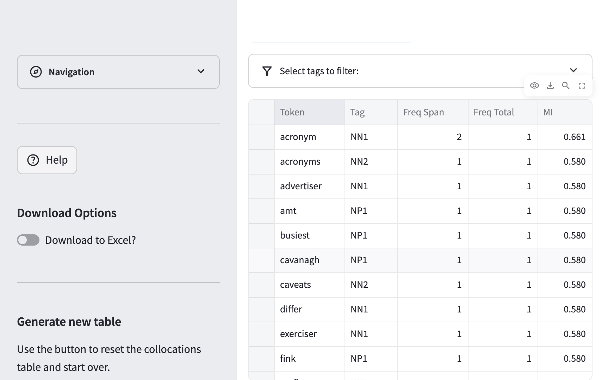

3 Collocational Patterns in Human and AI Writing
3.1 Use Case
A researcher in digital writing studies wants to investigate whether large language models (LLMs) produce distinctive word associations when compared to human writers — and whether those patterns vary by genre. Specifically: does a common evaluative adjective like important collocate with the same words across GPT-4-generated, Llama-generated, and human texts? And does genre (academic, news, spoken, TV/movie scripts) modulate those patterns?
This vignette introduces two tools for moving from raw frequency data to interpretable linguistic patterns:
- The Collocations tool, which uses point-wise mutual information (PMI) statistics to identify words that co-occur with a node word more often than chance would predict
- The KWIC (Key Words in Context) tool, which presents concordance lines — aligned rows showing each occurrence of a word surrounded by its left and right context — enabling qualitative exploration of how a word is actually used
Corpus used: H_HAPE_mini (Internal corpora, Large Dictionary)
The HAP-E Mini corpus contains a curated, balanced sample drawn from the Human-AI Parallel English (HAP-E) Corpus (Reinhart et al. 2025). The full HAP-E corpus pairs human-authored texts with multiple LLM continuations of the same prompts. The mini version retains three author groups across six text types. See the HAP-E dataset page for full details.
3.2 Step 1: Load the Corpus
Navigate to Manage Corpus Data. Under the Internal tab, select the Large Dictionary model, then choose H_HAPE_mini from the corpus dropdown. Click Process Target.
After loading, the corpus summary will confirm:
Number of part-of-speech tokens in corpus: 1,390,260
Number of DocuScope tokens in corpus: 1,078,344
Number of documents in corpus: 2,7003.2.1 Process Document Metadata
When prompted about document categories, select Yes and click Process Document Metadata. The H_HAPE_mini filenames encode author group and text type (e.g., gpt4_acad_0744, human_spok_1393, llama_tvm_0020). DocuScope CA extracts the author group prefix as the document category.
In this workflow, metadata means document-level labels extracted from the filenames, not additional linguistic annotation. For H_HAPE_mini, the filename prefix identifies the author group (gpt4, human, or llama), while later parts of the ID preserve the text type.
Processing metadata makes those author-group labels available throughout the app. That is what allows you to compare categories in later workflows, while still using the document IDs in KWIC to inspect text type at the same time.
The metadata will identify three categories:
| Category | Description | Documents |
|---|---|---|
gpt4 |
Texts authored by ChatGPT-4o | 900 |
human |
Texts authored by human writers | 900 |
llama |
Texts authored by Llama 8B Instruct | 900 |
Each category spans all six text types in the corpus: academic articles, news, fiction, spoken language, blog posts, and TV/movie scripts. Because the corpus is balanced across both author groups and text types, differences across categories are more plausibly attributed to authorship style than to topic selection alone.
3.3 Step 2: Identify a Target Word with Token Frequencies
Before computing collocations, it helps to identify a candidate word with sufficient corpus frequency. Navigate to Token Frequencies and click Frequency Table in the sidebar.
The table shows frequency, relative frequency, and range for every lemma in the corpus. Sort by Freq (absolute frequency) descending to see the most common tokens. To locate a specific word, use the Search button in the table toolbar and enter important.
The search will return the relevant row for the adjective:
| Token | Tag | AF | RF (per million) | Range (%) |
|---|---|---|---|---|
| important | JJ | 381 | 274 | 69.78 |
With 381 occurrences distributed across 69.78% of documents, important is frequent and wide-ranging enough to support a meaningful collocation analysis. Its semantic load — it signals evaluation, emphasis, and epistemic stance — makes it a theoretically motivated target for examining how human and AI writers construct argumentative language.
Choosing a node word for collocation analysis: A good node word should have sufficient corpus frequency (at least 50–100 occurrences is recommended) and a clear semantic or functional role. Very high-frequency function words like the or is tend to produce collocation tables dominated by other function words. Evaluative adjectives like important, significant, or critical are productive targets because their collocational profile reveals how writers construct stance and emphasis.
In this workflow, important is a useful choice because it is frequent enough to analyze reliably, interpretable across multiple genres, and likely to reveal evaluative framing rather than just topic-specific vocabulary.
3.4 Step 3: Compute Collocations
Navigate to Collocations. The Collocation Configuration panel will appear. Enter important in the Node word field and press Enter.
Use the following settings:
- Span: 4 Left, 4 Right (the default — considers up to four tokens on each side of the node)
- Association measure: NPMI (Normalized Pointwise Mutual Information — the default)
- Anchor tag: No Tag (search by lemma, not restricted to a specific POS)
Click Collocations Table in the sidebar.
This workflow moves from Token Frequencies to Collocations for a reason: the frequency table helps you choose a viable node word, while the collocations table shows which words are statistically associated with that node.
PMI is one of the most widely used association measures, but it is highly sensitive to rare combinations. In practice, that often means researchers need to add an extra frequency filter or manually ignore very low-frequency collocates.
NPMI is often a good exploratory default because it rescales scores to a bounded range and usually produces a more interpretable ranking for mid-sized corpora. It does not eliminate rare-item effects, but it can reduce how much manual filtering is needed.
The key methodological question is not which measure is universally best, but which one produces a ranking that is useful for your corpus size and research goal.
Start with No Tag when the node word is already clear enough for exploratory analysis. Add an anchor tag only when you need to disambiguate a word that can play multiple important grammatical roles, or when you want tighter control over what counts as a match.
3.4.1 Understanding NPMI
NPMI is a normalized variant of Pointwise Mutual Information. For a pair of words (\(w_1\), \(w_2\)), PMI is defined as:
\[\text{PMI}(w_1, w_2) = \log_2 \frac{P(w_1, w_2)}{P(w_1) \cdot P(w_2)}\]
where \(P(w_1, w_2)\) is the probability of the pair co-occurring within the span window and \(P(w_1)\), \(P(w_2)\) are their individual corpus probabilities. NPMI divides PMI by \(-\log_2 P(w_1, w_2)\), rescaling scores to the range \([-1, 1]\):
- NPMI near 1.0: the words co-occur almost exclusively with each other
- NPMI near 0: co-occurrence is no greater than chance
- NPMI near -1.0: the words actively avoid each other
High NPMI identifies distinctive collocates — words whose presence near the node word is statistically surprising given their overall corpus frequency. This is different from raw frequency: a very common word like the will rarely achieve high NPMI even if it appears near important hundreds of times.
Whether rare-item inflation matters depends on the research question. If you want stable, recurring phraseology, the very top of the table may contain too much noise from one-off combinations. If you are using collocations as a discovery tool for close reading, those unusual pairings may still be worth inspecting.
3.4.2 Reading the Collocations Table
The table returns five columns:
| Column | Description |
|---|---|
| Token | The collocate word |
| Tag | Its CLAWS7 part-of-speech tag |
| Freq Span | How many times it appears within the span of important |
| MI | The NPMI score |
| Freq Total | How many times it appears anywhere in the corpus |
The table is sorted by NPMI descending. The top rows are typically hapax legomena — words that appear only once in the corpus and that single occurrence happens to be near the node word. These achieve high NPMI because \(P(w_1, w_2)\) is as high as it can be relative to \(P(w_2)\), but they contribute little to an account of typical usage patterns.

To investigate higher-frequency collocates, use the Select tags to filter accordion. Clicking individual POS tags limits the display to collocates of that grammatical class, making it easier to identify meaningful patterns against the noise of rare items. Alternatively, scroll the table toward the end (lower NPMI scores) to find the most frequent collocates.
Selected collocates of interest, retrieved by scrolling or tag-filtering:
| Token | Tag | Freq Span | Freq Total | NPMI |
|---|---|---|---|---|
| note | VVI | 4 | 11 | 0.564 |
| parameter | NN1 | 5 | 18 | 0.552 |
| thing | NN1 | 3 | 264 | 0.488 |
| role | NN1 | 9 | 455 | 0.358 |
| very | RG | 13 | 742 | 0.359 |
| also | RR | 24 | 1,750 | 0.357 |
Tag glossary: VVI = infinitive form of a main verb; NN1 = singular common noun; RG = degree adverb (e.g., very, quite); RR = general adverb (e.g., also, really).
Three patterns emerge from this selection:
“important to note” (note VVI, NPMI=0.564): The infinitive note appears only 11 times in the entire corpus, yet 4 of those occurrences fall within the span of important. This is a strong statistical signal for the fixed phrase it is important to note — a formulaic hedging device common in academic and instructional writing.
“important role/component/element” (role NN1, NPMI=0.358): The noun role appears frequently across the corpus (455 times) but still achieves a moderate NPMI score, reflecting the conventional pre-nominal pattern an important role in…, an important component of…. These nominal collocates signal that writers use important to preface substantive claims about the function of entities in a system.
Intensifiers (very RG, also RR): These high-frequency adverbs achieve similar NPMI scores but serve different functions. Very appears in emphatic constructions (very important consideration), while also most often participates in additive structures (also important is… or it is also important to…).
3.5 Step 4: Examine Concordance Lines with KWIC
The collocations table reveals which words associate with important, but not how those associations are deployed in actual sentences. Navigate to Key Words in Context (KWIC) to investigate the concordance lines.
In the KWIC Configuration panel, enter important in the Node word field. Leave Search mode set to Fixed (exact match) and click KWIC Table in the sidebar.
Using Fixed search is appropriate here because the goal is to examine the exact lexical item important, not related forms such as importance or importantly.
The table returns one row per corpus occurrence of important, with four columns: Doc ID, Pre-Node (left context), Node, and Post-Node (right context). The Doc ID encodes both the author group and the text type (e.g., gpt4_acad_0744 = GPT-4, academic text #744).
Because the table is sorted by document ID, rows with shared prefixes cluster together. That makes it possible to scan stretches like gpt4_acad_*, human_acad_*, or llama_tvm_* as rough groupings before doing any additional filtering.
The examples below are illustrative slices of the concordance, not exhaustive summaries of every occurrence in the corpus.
3.5.1 Patterns in GPT-4 Academic Writing
The first rows in the table (sorted alphabetically, so gpt4_acad_* documents appear first) reveal a striking pattern:
| Doc ID | Pre-Node | Node | Post-Node |
|---|---|---|---|
| gpt4_acad_0178 | and Fink, 2011). Equally | important | is the potential utility of machine learning |
| gpt4_acad_0382 | the achievements in vehicle platooning signify | important | strides toward that vision. Engineers and |
| gpt4_acad_0428 | adoption. The social dimension is equally | important | , requiring a shift in public perception |
| gpt4_acad_0641 | harm reduction strategies and EC regulation, | important | steps toward reducing the considerable public health |
| gpt4_acad_0744 | 2012). However, it is | important | to recognize the need for continued calibration |
| gpt4_acad_0797 | al., 2017). Equally | important | are economic considerations. The economic viability |
| gpt4_acad_0969 | conservation practices has gained recognition as an | important | element for achieving sustainable resource management |
| gpt4_acad_1034 | , or even brain enhancement technologies raises | important | questions regarding equity, access, and |
| gpt4_acad_1089 | for instance, is gradually becoming an | important | component in prion research, allowing visualization |
Two constructions dominate:
- “Equally important is/are…” — this discourse connector appears twice in just these nine rows (
gpt4_acad_0178,gpt4_acad_0797). It functions as a cohesive device for introducing a new argument of equal weight to the preceding one. The inverted copular structure (Equally important are economic considerations) is a hallmark of formal written prose. - “it is important to [VERB]” — here, to recognize (
gpt4_acad_0744). This epistemic hedge is the grammatical environment predicted by the NPMI collocate note (VVI): the infinitive follows important in a to-infinitive complement.
3.5.2 Patterns in Human Academic Writing
Scrolling to the human_acad_* rows reveals a different profile:
| Doc ID | Pre-Node | Node | Post-Node |
|---|---|---|---|
| human_acad_0557 | of proportional population growth rates has some | important | consequences. For example, two ecosystems |
| human_acad_0578 | ’s empowerment in the agricultural sector is | important | , given that agriculture remains the basis |
| human_acad_0611 | bean level is not available. Another | important | parameter related to cocoa bean quality is |
| human_acad_0632 | of biomass and coal differ in many | important | ways, which can result in completely |
| human_acad_0641 | a smoker has been identified as an | important | barrier to smoking cessation |
| human_acad_0641 | al., 2009). Another | important | factor in the transition from smoker to |
| human_acad_0641 | , 2013), it is therefore | important | that such symptoms are minimised to ensure |
| human_acad_0680 | The improvement compared to AC is certainly | important | , but still, there are obvious |
| human_acad_0741 | of structure on lipolysis is therefore an | important | aspect to consider when designing oleogel systems |
Human academic writing uses important primarily in two ways:
- Pre-nominal use with empirical nouns: “Another important parameter”, “an important barrier”, “an important factor”, “an important aspect” — each modified noun names a specific research-domain concept (parameter, barrier, factor, aspect), grounding the claim in technical vocabulary.
- Complement clause construction: “it is therefore important that such symptoms are minimised” — notably, this is a that-complement clause rather than the infinitive to-complement (it is important to) common in GPT-4 texts.
The “Equally important is/are…” discourse connector, conspicuous in the GPT-4 rows, does not appear in the visible human academic rows.
3.5.3 Patterns in Llama TV/Movie Script Writing
Scrolling toward the llama_tvm_* rows (alphabetically later) shows a markedly different register:
| Doc ID | Pre-Node | Node | Post-Node |
|---|---|---|---|
| llama_tvm_0020 | We need to focus on what’s | important | . Connor looks up at him, |
| llama_tvm_0020 | hope in his eyes. What’s | important | , Dad? Dennis takes another drag |
| llama_tvm_0020 | You need to focus on what’s | important | . Dennis nods, determination etched on |
| llama_tvm_0113 | of seniors walking by, looking very | important | and very… senior. Fred’s |
| llama_tvm_0779 | . Let’s get back to the | important | stuff. Like the report. Yeah |
| llama_tvm_0820 | be gross, it’s actually really | important | for us to study owl pellets |
Here, important functions as an evaluative predicate in dialogue — “What’s important?” / “focus on what’s important” / “the important stuff”. The informal repetition, sentence fragments, and character voice typical of scripts contrast sharply with both the GPT-4 academic and human academic patterns. This illustrates a crucial methodological point: genre can constrain vocabulary use as powerfully as authorship does.
Because document IDs in H_HAPE_mini encode both author group and text type (e.g., gpt4_acad_0744 encodes author=gpt4, type=academic), the KWIC table allows researchers to trace patterns across both dimensions simultaneously without needing additional metadata filtering. A researcher can scan all *_acad_* rows to compare academic writing across authors, or scan all gpt4_* rows to compare GPT-4 writing across genres.
3.6 Interpretation
The workflow — Token Frequencies → Collocations → KWIC — traces a path from corpus-level statistics to individual text evidence. Each step contributes something the others cannot:
Token Frequencies established that important is sufficiently frequent and widely distributed to support analysis (AF=381, Range=69.78%). Without this step, we might not know whether any collocational patterns found reflect genuine tendencies or are artefacts of a handful of documents.
Collocations (NPMI) revealed the strongest statistical associates: note (VVI) with NPMI=0.564 signals the phrase important to note, while role and parameter (both NN1) signal nominal collocates of varying frequency. The NPMI score reweights co-occurrence by corpus frequency, preventing common words from dominating the results.
KWIC gave us evidence for the patterns latent in the statistics. The strong NPMI of note (VVI) reflects the GPT-4 academic phrase “it is important to recognize”, while the high frequency of role as collocate appears across both human and AI academic texts. Most strikingly, the “Equally important is/are…” construction — a cohesive discourse connector for introducing parallel arguments — appears repeatedly in GPT-4 academic texts but is absent from the visible human academic concordance lines.
These findings align with prior observations about AI-generated academic writing: LLMs tend to favor formulaic discourse organization devices (such as “Equally important”, “It is important to note”) that signal academic register without necessarily being specific to the topic at hand. Human academic writing, by contrast, tends to attach important to content-specific technical vocabulary (parameter, barrier, consequences) reflecting engagement with the disciplinary literature.
The patterns observed here are suggestive rather than definitive. A full statistical comparison across author groups — including keyness testing and effect-size measures — would require the Compare Corpus Parts workflow (see the passive constructions vignette for an example). The KWIC and Collocations tools are best used for targeted qualitative investigation of candidate patterns identified by quantitative means.